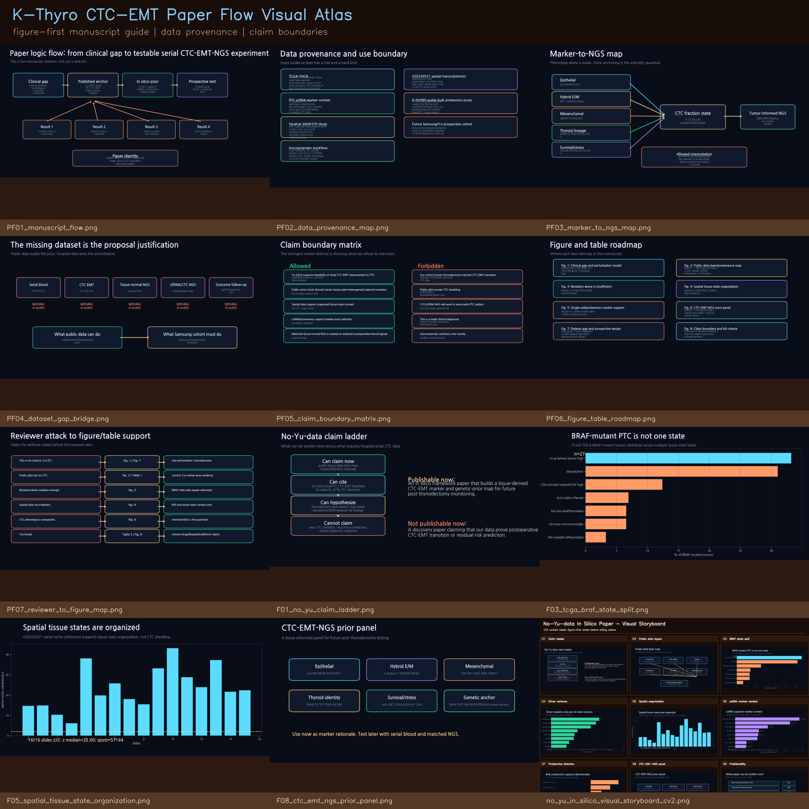
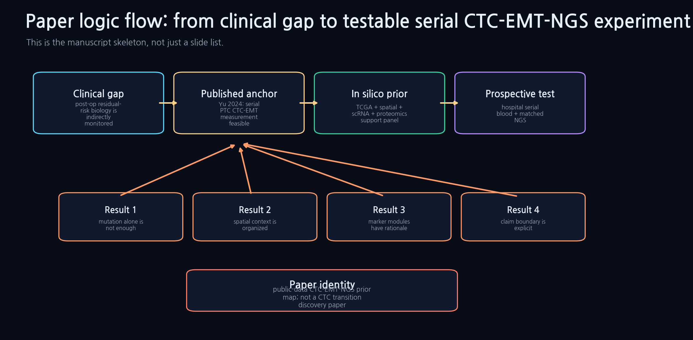
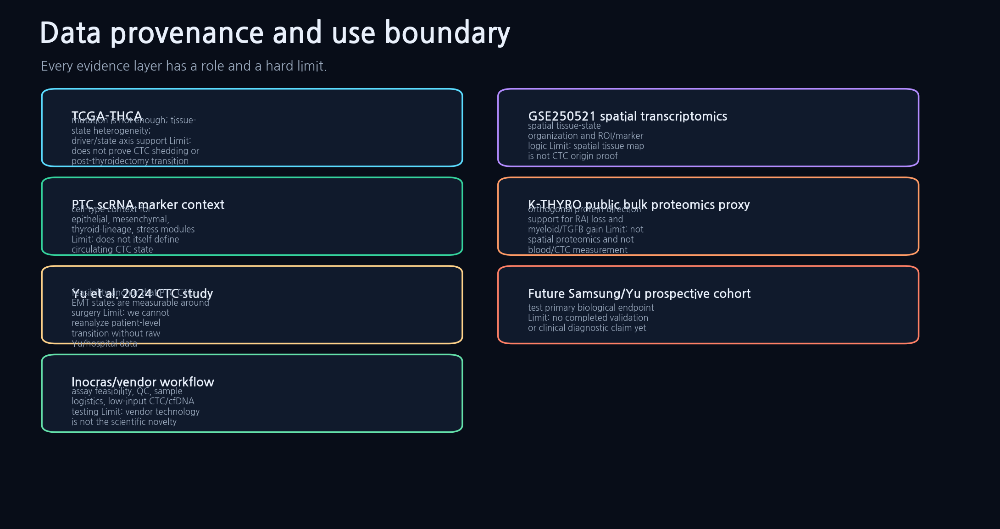
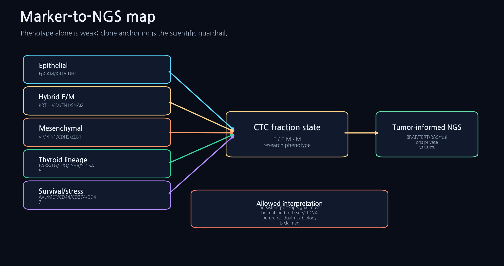
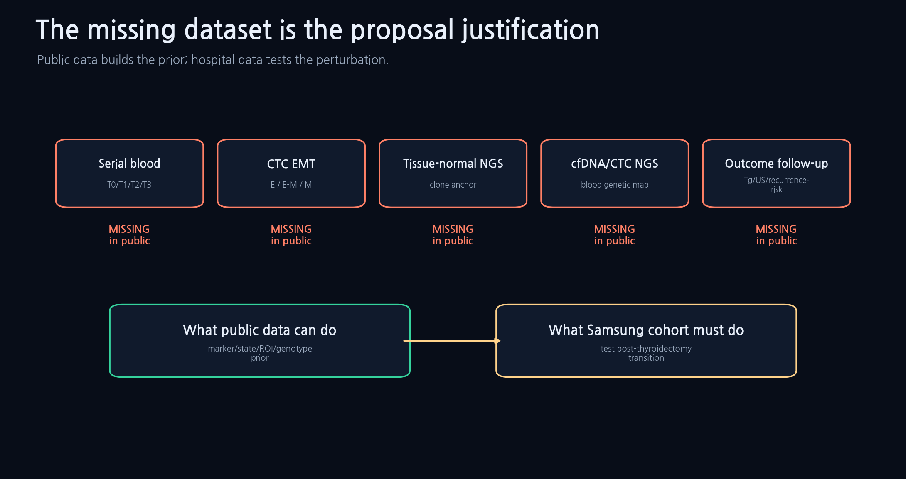
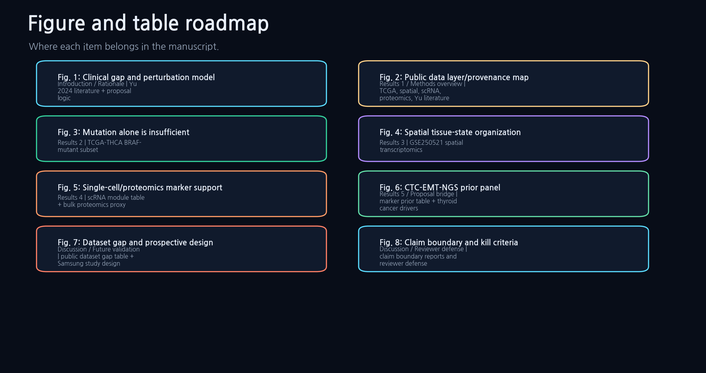
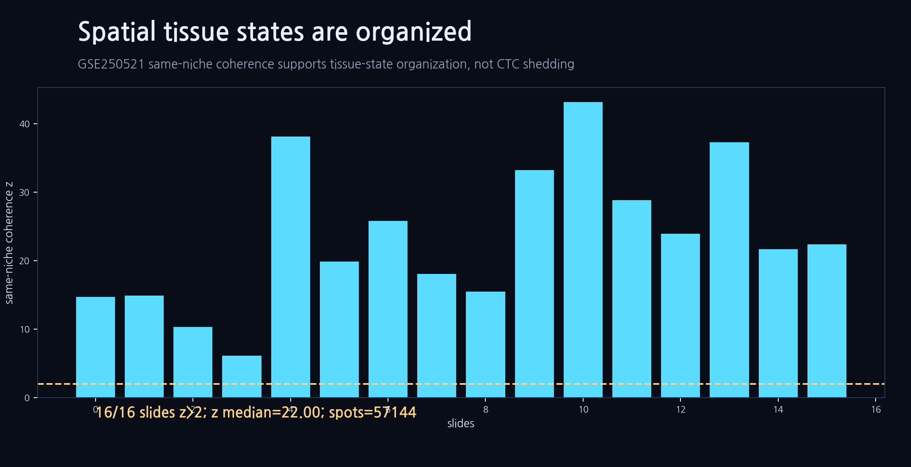

{kind=link}
Master CV2 Visual AtlasPF08_cv2_visual_atlas.png
한 장으로 보는 전체 논문 흐름과 핵심 그림 벽. 발표/카카오 전달용 첫 이미지.
이 페이지는 지금까지 만든 Samsung Science proposal, no-Yu-data in silico 분석, 공개 pilot 결과를 논문 작성 순서로 재배열한 master dossier다. 각 그림과 표마다 어떤 데이터를 썼는지, 본문에서 무슨 말을 해야 하는지, 어디까지 말하면 안 되는지를 함께 적었다.
one disease, one perturbation, one transition
public-data prior/framework paper
needs Yu/hospital serial CTC raw data
largest state 33.2%
same-niche coherence z>2
manifest + data dictionary + claim table

PTC CTC-EMT-NGS prior map / framework paper. 공개 tissue-state, spatial, scRNA, proteomics 근거를 이용해 post-thyroidectomy CTC-EMT monitoring을 위한 marker/clone-anchor 논리를 정리한다.
새로운 postoperative CTC-EMT transition discovery paper. Yu/병원 raw serial CTC table과 matched NGS가 없으면 transition, residual-risk prediction, recurrence association은 주장 금지다.
| section | story_step | why_here | figure_or_table | boundary_sentence |
|---|---|---|---|---|
| Title/Abstract | Name the paper as a framework/prior-map paper | No-Yu data can support a translational rationale, not discovery | Fig. 1 summary schematic | Do not say postoperative transition was discovered |
| Introduction paragraph 1 | PTC is usually curable but residual-risk biology is hard to read after surgery | creates clinical gap | Fig. 1A | avoid implying current tools are useless |
| Introduction paragraph 2 | Yu 2024 shows CTC-EMT measurement around thyroidectomy is feasible | published anchor | literature anchor box | do not present Yu as our dataset |
| Introduction paragraph 3 | No public dataset integrates serial CTC-EMT, matched NGS, cfDNA, tissue context, and outcome | main gap | Fig. 7 / Table gap | avoid saying no one has ever studied CTCs |
| Results 1 | Public multi-omics can build a prior but not test the transition | data provenance first | Fig. 2 | no CTC conclusion |
| Results 2 | BRAF/mutation alone does not resolve tissue-state heterogeneity | TCGA BRAF split and variance models | Fig. 3 | no causality |
| Results 3 | Tissue states are spatially organized | spatial coherence and adjacency | Fig. 4 | not CTC origin |
| Results 4 | Marker modules have cell and protein context | scRNA/proteomics support | Fig. 5 | not validated blood assay |
| Results 5 | Construct CTC-EMT-NGS prior map | panel logic and clone anchor | Fig. 6 | research-grade, not diagnostic |
| Discussion | The real test requires serial hospital CTC/cfDNA/tissue NGS | bridge to Samsung Science proposal | Fig. 7 | future validation needed |
| Reviewer defense | Use hard claim boundaries and kill criteria | credibility | Fig. 8 / Table 4 | no recurrence prediction |
한 장으로 보는 전체 논문 흐름과 핵심 그림 벽. 발표/카카오 전달용 첫 이미지.

임상 gap에서 Yu anchor, 공개 prior, 병원 prospective test까지 이어지는 논문 골격.

각 데이터가 무엇을 지지하고 무엇을 지지하지 않는지 역할/한계를 함께 표시.

CTC phenotype만으로 끝내지 않고 tissue/cfDNA/CTC NGS clone anchor를 요구하는 구조.

public data로 가능한 부분과 Samsung/Yu cohort가 새로 만들어야 할 부분을 분리.

허용 claim과 금지 claim을 reviewer가 보기 전에 먼저 보여주는 방어 장치.

각 그림과 표가 논문 어느 위치에 들어가는지 정리.

예상 공격, 답변, figure/table support를 한 화면에 연결.

BRAF mutation 하나로 tissue-state를 설명할 수 없다는 공개 데이터 근거.

공간적으로 조직화된 tissue-state 근거. 단, CTC origin proof는 아님.

CTC marker prior의 cell-context rationale.

protein-level dedifferentiation 방향성 보조 근거.

E, E/M, M, thyroid-lineage, survival/stress, genetic anchor panel.

지금 가능한 논문 유형과 불가능한 논문 유형을 구분.
| dataset_id | type | local_input | n_or_scale | used_for | key_variables | allowed_claim | forbidden_claim |
|---|---|---|---|---|---|---|---|
| TCGA-THCA | bulk tumor RNA/mutation/clinical public cohort | kthyro_public_pilot/results/tables + extra_analyses/tables | 505 primary tumors in pilot context; BRAF-mutant subset 274 | mutation is not enough; tissue-state heterogeneity; driver/state axis support | driver group, vulnerability/state label, RAI/HLA/immune/CD8 axes, covariates | public PTC tissue states split beyond mutation group | does not prove CTC shedding or post-thyroidectomy transition |
| GSE250521 spatial transcriptomics | thyroid spatial transcriptomics | spatial_coherence_statistics.tsv; spatial maps/adjacency/hotspot tables | 16 slides; 57144 spots | spatial tissue-state organization and ROI/marker logic | slide, spot, niche label, module score, same-neighbor coherence z | tissue states are spatially organized in public thyroid tissue data | spatial tissue map is not CTC origin proof |
| PTC scRNA marker context | single-cell RNA reference summarized in pilot tables | scrna_module_celltype_attribution.tsv; scRNA marker figures | 12 module rows in current summary | cell-type context for epithelial, mesenchymal, thyroid-lineage, stress modules | module, top cell type, top-minus-second attribution, cell count | marker modules have interpretable tissue/cell context | does not itself define circulating CTC state |
| K-THYRO public bulk proteomics proxy | bulk proteomics thyroid cancer state proxy | bulk_proteomics_kthyro_module_contrasts.tsv; dediff_trends.tsv | 461 thyroid samples in local proxy summary | orthogonal protein-direction support for RAI loss and myeloid/TGFB gain | module, contrast, Cohen's d, FDR, dedifferentiation-order rho | protein-level direction is consistent with tissue-state prior | not spatial proteomics and not blood/CTC measurement |
| Yu et al. 2024 CTC study | published prospective PTC serial CTC anchor | literature anchor summarized in Samsung pitch pack; raw patient table not local | 62 prospective PTC patients; pre-op, 2 weeks, 3 months; 87% CTC detection reported | feasibility anchor that PTC CTC-EMT states are measurable around surgery | timepoint, CTC count, epithelial/hybrid/mesenchymal phenotype | published CTC-EMT measurement around thyroidectomy is feasible | we cannot reanalyze patient-level transition without raw Yu/hospital data |
| Future Samsung/Yu prospective cohort | planned clinical research dataset | not yet collected | serial blood T0/T1/T2/T3 plus tissue-normal NGS/cfDNA/CTC-enriched NGS | test primary biological endpoint | CTC E/EM/M, tissue clone, cfDNA persistence, Tg/US/pathology/outcome | proposal will test thyroidectomy as perturbation | no completed validation or clinical diagnostic claim yet |
| Inocras/vendor workflow | planned sequencing/assay service inputs | vendor questionnaire and budget reports | not a novelty source; execution infrastructure only | assay feasibility, QC, sample logistics, low-input CTC/cfDNA testing | input amount, QC pass rate, panel coverage, turnaround, failure handling | vendor can support implementation if QC thresholds pass | vendor technology is not the scientific novelty |
| paper_item | title | asset_or_table | data_used | manuscript_position | allowed_takeaway | claim_boundary |
|---|---|---|---|---|---|---|
| Fig. 1 | Clinical gap and perturbation model | PF01_manuscript_flow.png; slide01/02 figures | Yu 2024 literature + proposal logic | Introduction / Rationale | Thyroidectomy is a controlled human perturbation for serial CTC-EMT monitoring | not a clinical diagnostic |
| Fig. 2 | Public data layer/provenance map | PF02_data_provenance_map.png; F02_public_data_layer_map.png | TCGA, spatial, scRNA, proteomics, Yu literature | Results 1 / Methods overview | public data can construct a prior map | does not prove CTC biology |
| Fig. 3 | Mutation alone is insufficient | F03_tcga_braf_state_split.png; tcga_braf_only_vulnerability_axis_heatmap.png | TCGA-THCA BRAF-mutant subset | Results 2 | BRAF tumors split across tissue states | no recurrence/CTC claim |
| Fig. 4 | Spatial tissue-state organization | F05_spatial_tissue_state_organization.png; spatial_coherence_summary.png | GSE250521 spatial transcriptomics | Results 3 | tissue states are spatially coherent | not a shedding origin proof |
| Fig. 5 | Single-cell/proteomics marker support | F06_scrna_marker_context.png; F07_proteomics_dediff_direction.png | scRNA module table + bulk proteomics proxy | Results 4 | marker modules have tissue/cell/protein rationale | not CTC validation |
| Fig. 6 | CTC-EMT-NGS prior panel | F08_ctc_emt_ngs_prior_panel.png; PF03_marker_to_ngs_map.png | marker prior table + thyroid cancer drivers | Results 5 / Proposal bridge | define research-grade phenotype/genotype panel | not a locked clinical assay |
| Fig. 7 | Dataset gap and prospective design | PF04_dataset_gap_bridge.png; slide08/09 figures | public dataset gap table + Samsung study design | Discussion / Future validation | integrated serial CTC-EMT-NGS dataset is missing and needed | not solved by public data |
| Fig. 8 | Claim boundary and kill criteria | PF05_claim_boundary_matrix.png; F09_publishability_decision.png | claim boundary reports and reviewer defense | Discussion / Reviewer defense | explicit boundaries make proposal credible | no overclaiming |
| Table 1 | Data dictionary | data_dictionary_master.tsv | all local/public/planned datasets | Methods / Supplement | each data layer has defined role and limits | no untracked source |
| Table 2 | Figure/table manifest | figure_table_manifest.tsv | all selected outputs | Supplement | every figure maps to a source and claim | no floating figure |
| Table 3 | Manuscript flow outline | manuscript_flow_outline.tsv | proposal/no-Yu outputs | Writing plan | result sequence is fixed | not final prose |
| Table 4 | Claim boundary matrix | claim_boundary_matrix.tsv | claim-boundary reports | Reviewer defense | allowed/forbidden statements are separated | not defensive handwaving |
1. 먼저 Yu 2024로 CTC-EMT 측정 가능성을 인정한다. 2. 바로 “하지만 public integrated dataset은 없다”로 gap을 만든다. 3. TCGA/spatial/scRNA/proteomics는 CTC proof가 아니라 marker-prior라고 제한한다. 4. 그래서 matched tissue-normal NGS와 serial blood가 proposal core라고 닫는다.
이 그림을 첫 설명 그림으로 쓰면 흐름이 가장 안전하다.
| status | statement | support | boundary |
|---|---|---|---|
| Allowed | Yu 2024 supports feasibility of serial CTC-EMT measurement in PTC | Slide 3; literature anchor row | published summary, not local raw reanalysis |
| Allowed | Public omics show thyroid cancer tissue-state heterogeneity beyond mutation | Fig. 3; TCGA BRAF tables | tissue-state support only |
| Allowed | Spatial data support organized tissue-state context | Fig. 4; spatial coherence table | not CTC origin proof |
| Allowed | scRNA/proteomics support marker-prior selection | Fig. 5; marker table | not blood validation |
| Allowed | Matched tissue-normal NGS is needed to interpret postoperative blood signals | Fig. 6-7; NGS map | proposal logic |
| status | statement | support | boundary |
|---|---|---|---|
| Forbidden | Our cohort proves thyroidectomy-induced CTC-EMT transition | none | requires Yu/hospital raw serial CTC data |
| Forbidden | Public pilot proves CTC shedding | none | public pilot is tissue/bulk/spatial only |
| Forbidden | CTC/cfDNA NGS will work in every early PTC patient | none | must be stage-gated by QC |
| Forbidden | This is a ready clinical diagnostic | none | research-grade monitoring framework only |
| Forbidden | Inocras/vendor method is the novelty | none | vendor is infrastructure |
리뷰어 방어용 핵심 그림. 과장하지 않는다는 신뢰를 만든다.
{kind=link}
{kind=link}
{kind=link}
{kind=link}
{kind=link}
{kind=link}